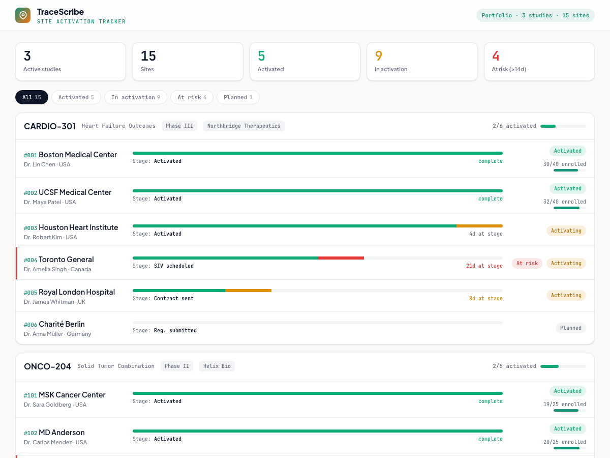

Site Activation Tracker
Track clinical-trial sites through their activation pipeline across a study portfolio, surfacing the sites stuck on the critical path. Based on the site-tracker app, recreated here as a standalone, in-browser demo.
Launch live demo
Runs in your browser
What it does
Tracks every trial site's progress through the 8-milestone activation pipeline (regulatory, contracts, site initiation visit, EDC training, activation), rolls it up across studies, and flags the sites that have stalled at a stage.
How it works
- Each site moves through 8 activation milestones; its status (planned, activating, activated) is derived from how far it has progressed.
- Sites stuck at a stage beyond a threshold are flagged at-risk, making the bottlenecks on the activation critical path obvious.
- Filter the portfolio by status, and click any site to expand its full milestone timeline.
Site activationPortfolio
BottlenecksTrial ops
The demo uses the app's seed portfolio (3 studies, 15 sites). The full site-tracker is a Next.js + Supabase tool with live updates and per-site detail.

Static preview - click to open the live, interactive demo